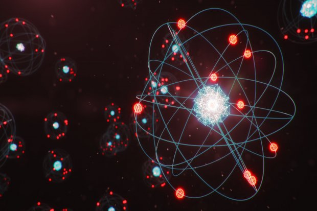

An atom is the smallest unit of ordinary matter that forms a chemical element. every solid, liquid, gas, and plasma is composed of neutral or ionized atoms.
View
Monyet yang unik ini juga dikenal sebagai hewan yang memiliki adaptasi yang sangat baik dengan lingkungan yang bersuhu sangat dingin. Umumnya, monyet hidung pesek rambut emat tinggal di hutan pegunungan.
View